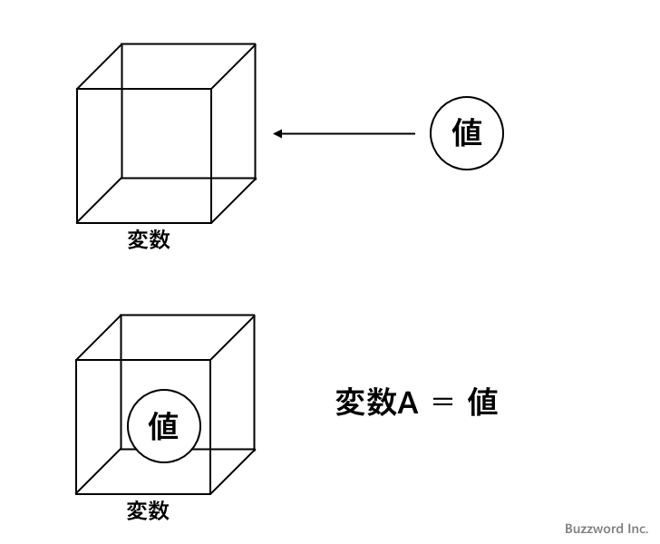
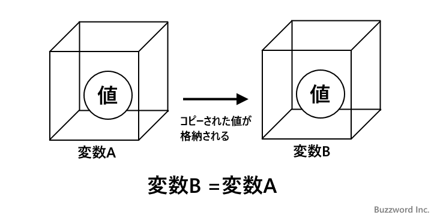
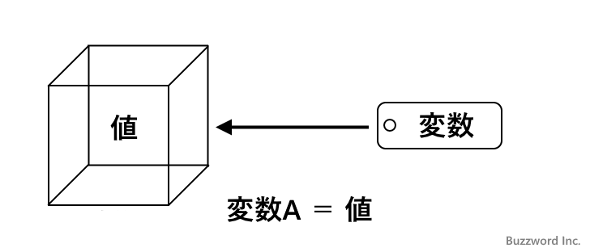
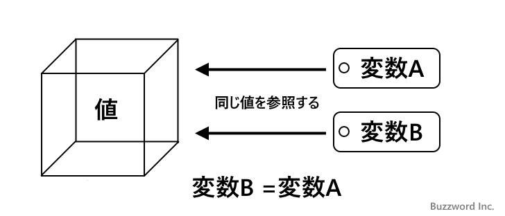

Pythonにおける変数とは
変数に関する基本的な説明と、 Python では変数をどのように利用するのかについて解説します。
目次
変数とは
Python に限らずほとんどのプログラミング言語では値を格納するために変数と呼ばれるものを使用します。変数というのは繰り返し使用したり後から参照したい数値や文字列を格納する場合に使用されます。
例えば次の例では商品の販売価格を価格×消費税という計算をして画面に出力しています。
print("オレンジの値段は" + str(120 * 1.08))
print("リンゴの値段は" + str(90 * 1.08))
print("バナナの値段は" + str(100 * 1.08))
消費税の税率を毎回記載しているとケアレスミスで間違えることもありますし、税率が変更された場合にすべて変更しなければなりません。このような時に変数を使うと便利です。
tax = 1.08
print("オレンジの値段は" + str(120 * tax))
print("リンゴの値段は" + str(90 * tax))
print("バナナの値段は" + str(100 * tax))
tax という変数を定義し、税率である 1.08 を代入しています。数値や文字列を直接記載する代わりに値が代入された変数を記載することで、その変数に代入されている値が書かれているのとを同じ結果となります。
変数を使うことで直接数値を書き込むよりもケアレスミスが起きにくくなり、また税率が変更された場合も変数への値の代入だけを変更するだけで済みます。
tax = 1.1 # 税率が変更された場合に変更するのはこの1か所
print("オレンジの値段は" + str(120 * tax))
print("リンゴの値段は" + str(90 * tax))
print("バナナの値段は" + str(100 * tax))
-- --
また演算した結果を保存しておく場合にも変数は便利です。例えば英語、数学、国語の成績の合計と平均を求める例で考えてみます。
print("テストの成績の合計は" + str(80 + 72 + 84))
print("テストの成績の平均は" + str((80 + 72 + 84)/3))
合計と平均を計算するのに毎回 80 + 72 + 84 という演算を行っています。このような場合に変数を使うと便利です。
sum = 80 + 72 + 84
print("テストの成績の合計は" + str(sum))
print("テストの成績の平均は" + str(sum/3))
sum という変数を定義し、テストの合計を計算して代入しています。合計を出力する場合は変数の値をそのまま出力し、平均を出力する場合は変数に代入された合計点を除算した結果を出力します。テストの合計点を何度も計算せずに済みだけでなく、プログラムも見やすくなりまた成績を修正する場合も簡単になります。
このように変数は大変便利なもので、プログラムを記述する上でなくてはならないものです。
Pythonにおける変数
変数の基本的な考え方はどのプログラミング言語でも基本的に同じですが、変数と変数に代入される値の関係について大きく 2 つに分かれます。
最初に変数を値を保存する箱と考える方式です。値は変数という箱の中に保管され、変数を使用する時は変数に格納されている値を取り出して使います。

変数 A に保管されている値を別の変数 B に代入した場合、変数 B の箱には変数 A に格納されていた値のコピーが保管されます。それぞれの箱には値は同じですが別々の値が保管されることになります。

もう一つは値はそれぞれ独自の場所に保管されており、変数はその値の場所を示すラベルであると考える方式です。変数を使用する時は、変数が指し示す場所に格納されている値を取り出して使います。

変数 A に格納されている値を別の変数 B に代入した場合、変数 A が指し示していた値を変数 B も指し示します。 2 つの変数は同じ値を指し示すことになります。

Python での変数は箱ではなくラベルです。変数に数値や文字列などのイミュータブルと呼ばれる一度作成すると変更できないオブジェクトを格納したり、取り出したりして利用する場合には 2 つの方法の違いはあまり気にされる必要はありません。ただ、リストや辞書などのミュータブル(変更可能)なオブジェクトを変数に格納する場合は箱なのかラベルなのかの違いは重要となってくるので Python の変数がどちらなのかについては覚えておかれてください。
-- --
変数の基本的な使い方と、 Python における変数の考え方について解説しました。
( Written by Tatsuo Ikura )

著者 / TATSUO IKURA
初心者～中級者の方を対象としたプログラミング方法や開発環境の構築の解説を行うサイトの運営を行っています。